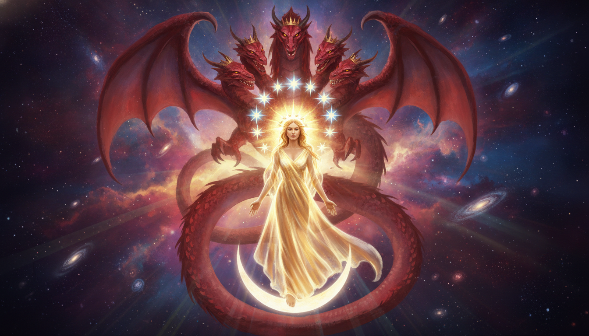

啟12:1-10：破曉前的宇宙大戰——從曠野走向凱歌
我們在基督裡有極大的榮耀，但我們在這個世界上必然面臨生產之痛與仇敵的威脅。撒但如同那條紅龍，總是企圖在神的工作剛要萌芽時進行破壞。
曠野不是神缺席的地方，而是我們脫離世界繁華、單單依賴神恩典的訓練場。
最後，天上傳來宣告，惡意的檢察官已經被摔下去了！因為十字架上的寶血已經還清了你我一切的罪債！

「我聽見在天上有大聲音說：『我神的救恩、能力、國度，並他基督的權柄，現在都來到了！因為那在我們神面前晝夜控告我們弟兄的，已經被摔下去了。』」（啟示錄 12:10）
主阿，當我們身處地上的苦難、面對仇敵晝夜的控告與欺壓時，求祢開我們的屬靈眼睛，看見天上的爭戰已經得勝。感謝主耶穌基督，祢是被提的男嗣，是得勝的君王；祢的寶血是我們擊退一切謊言的確據。求祢賜我們在曠野中安息的信心，領受神所預備的供養，並在生活中唱出得勝的凱歌。奉耶穌基督得勝的名求，阿們。
當時羅馬帝國流傳「阿波羅與蟒蛇」神話。約翰在此借用符號，將其翻轉：真正的得勝者非羅馬皇帝，而是復活基督。這是對教會在帝國逼迫下的屬靈真相揭示。
本段位於第七號與七碗之間，是全書核心的「幕間插入片段」。採用天地視角交替，解釋地上苦難源於天上得勝後仇敵的殘喘反撲。
經文：啟 12:1-4
婦人代表歷代忠心神子民，披日月榮耀，卻處於生產陣痛中。紅龍即撒但，企圖扼殺神的生命計畫。
經文：啟 12:5-6
「被提」表明神大能介入。曠野非棄絕之地，而是「神預備的地方」，是教會脫離世俗、單單依賴恩典的訓練場。
經文：啟 12:7-10
撒但「控告者」資格被剝奪。因基督寶血，信徒地位穩固。天上的勝利是地上的確據。
啟12:1-10：破曉前的宇宙大戰——從曠野走向凱歌
我們在基督裡有極大的榮耀，但我們在這個世界上必然面臨生產之痛與仇敵的威脅。撒但如同那條紅龍，總是企圖在神的工作剛要萌芽時進行破壞。
曠野不是神缺席的地方，而是我們脫離世界繁華、單單依賴神恩典的訓練場。
最後，天上傳來宣告，惡意的檢察官已經被摔下去了！因為十字架上的寶血已經還清了你我一切的罪債！
「只要基督的寶血在天上的施恩座前為我們說話，地獄裡所有惡魔的控告就都歸於徒然。」— 司布真
「我們必須經歷苦難，因為這世界與神為敵。然而，我們的苦難不是無意義的消耗。」— 潘霍華
網路資料可能出錯，請小心查證、謹慎使用。